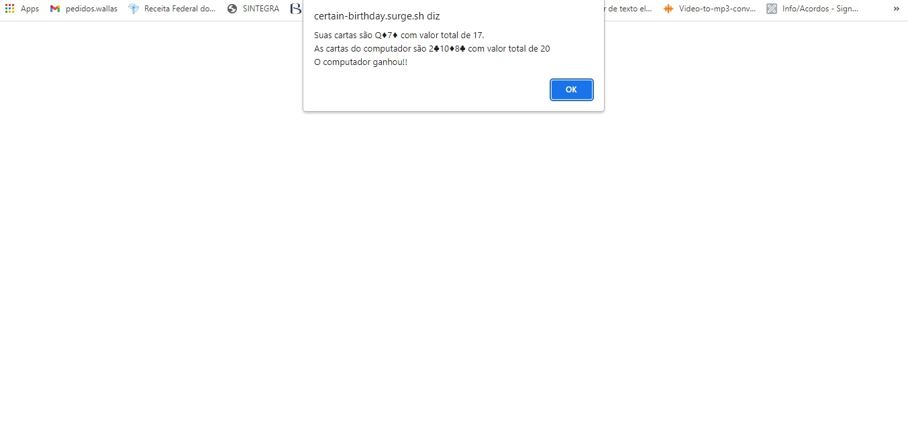

Projeto Black Jack.
Tecnologias Utilizadas: JavaScript e HTML.
Projeto sem a parte visual, realizado para o curso Desenvolvedor Web Full Stack - Labenu, o jogo é feito por pop ups que aparecer na tela para o usuário decidir o que fara em sua próxima jogada, não sendo possivel obter 2 ases na primeira mão. O jogo Black Jack, também conhecido como 21, tem por objetivo obter mais pontos que o oponente, mas se que o valor de 21 pontos seja ultrapassado, quem tiver mais pontos respeitando essa regra é o vencedor.
Ao clicar na primeira imagem você será redirecionado ao site.
Imagens do projeto:
